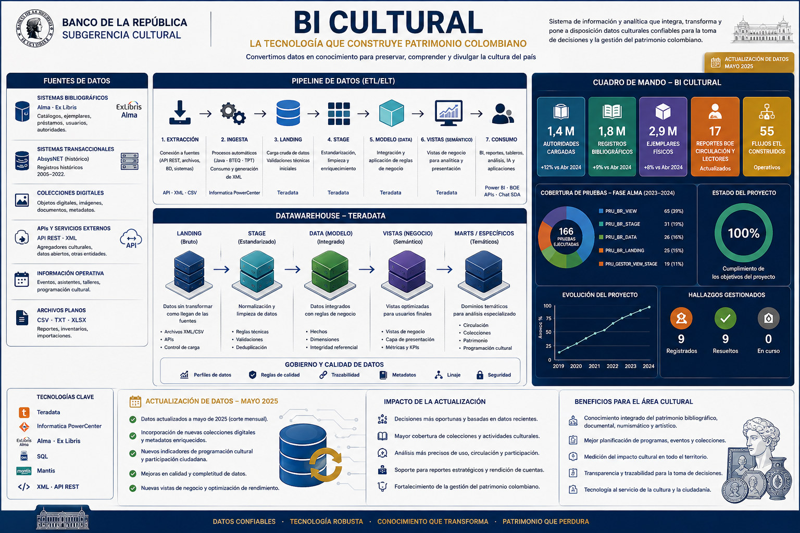

La función de pruebas de la Bodega de Datos del proyecto BI Cultural pasó de ser una responsabilidad sin dedicación asignada a ser el mecanismo que certificaba los entregables y soportaba las decisiones de pago frente al proveedor.
Fuentes, pipeline, bodega y cuadro de mando en una sola lámina.

Selecciona una etapa para ver sus funciones, su aporte de valor y la documentación que la respalda.
166 pruebas sobre 166 tablas en cinco bases de datos. La concentración en la capa de vistas refleja que es la que expone la información al usuario final y la que concentra la validación de reglas de negocio.
Cada hallazgo se registró en Jira con clave de incidencia, fecha de creación y fecha de resolución. Su clasificación entre corrección y ajuste determinaba quién asumía el costo.
| CLAVE | HALLAZGO | ESTADO | RESUELTO |
|---|
El proyecto se cerró con cumplimiento total de sus tres objetivos y de los entregables planeados. El ciclo de pruebas de la fase ALMA fue insumo directo de ese cierre.